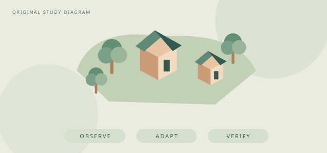

REFERENCE → UNDERSTANDING → ADAPTATION
好参考，
要变成自己的理解。
从游戏机制到画面语言，整理公开来源、原创研究摘要、独立适配思路，以及尚待补齐的验证。
研究快照 · 2026.10.10 持续补证，不用原型代替完成

ORIGINAL STUDY DIAGRAM从观察到独立设计原创矢量示意，非原作或GPU截图
档案覆盖参考与自有目标
外部参考、方法、风格与待识别材料分开保留
当前判断仍有未完成项
本导出未附实现与运行证据，不能视为最终验收
配图边界原创矢量示意
不是原项目截图；不打包未获授权的第三方素材
THE BRIEF, CHECKED
研究与验收，分阶段对照。
展开看公开记录能证明什么，以及还差什么。
有研究、有候选、有验收，是不同的进度。
正在读取验证准则…
THE REFERENCE LIBRARY
看项目，也看方法。
卡片先读结论，展开深入机制、美术、
适配步骤、风险与证据。
正在读取研究目录…
研究 → 原型 → 接入 → 编译 → 运行 → 视觉 → 手机证据要跟着版本走。
本页为筛选后的公开摘要，历史全文和私有工程材料不随包分发。C#编译不是Unity运行，逻辑测试不是GPU画面，CPU预览不是手机验收。来源不明的作品保持待识别，不以相似项目替代。
阅读公开研究清单 ↗